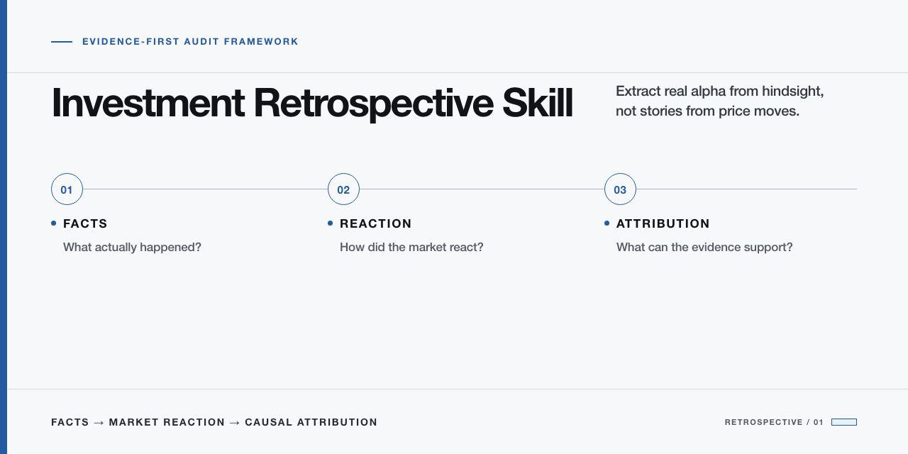

Facts
What actually happened?
Build the record from dated filings, disclosures, and verifiable events.
Evidence-first audit framework
Separate what happened, how the market reacted, and what the evidence can actually support.

The core distinction
Facts
Build the record from dated filings, disclosures, and verifiable events.
Market reaction
Compare the stock with market, sector, peers, and defined event windows.
Causal attribution
Score candidate drivers without treating price movement as causal proof.
The framework starts with price anomalies, defines the test, and preserves uncertainty when the evidence runs out.
A cleaner distinction between what is known, inferred, and still unproven.
Not a trading bot.
Not a stock picker.
Not investment advice.
Each report applies the same audit structure to a different market setup.
Clone the repository, open the skill, and ask your preferred assistant to reconstruct a past price move.
View repositorygit clone https://github.com/MOISTBEAN/investment-retrospective-skill.git